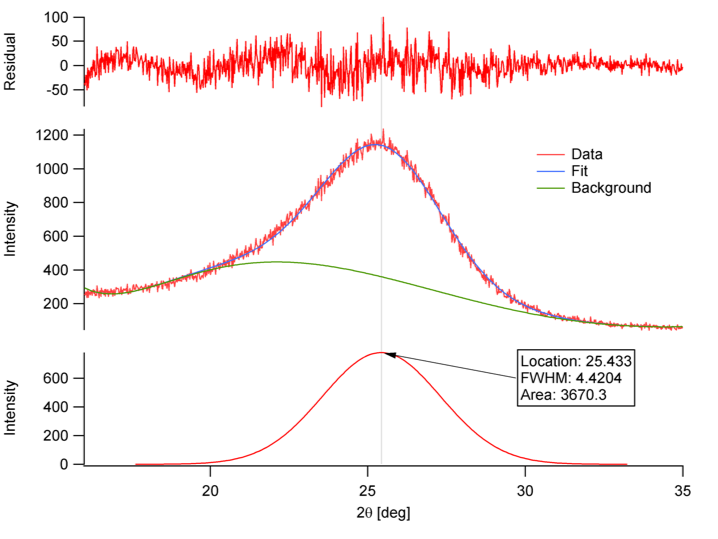
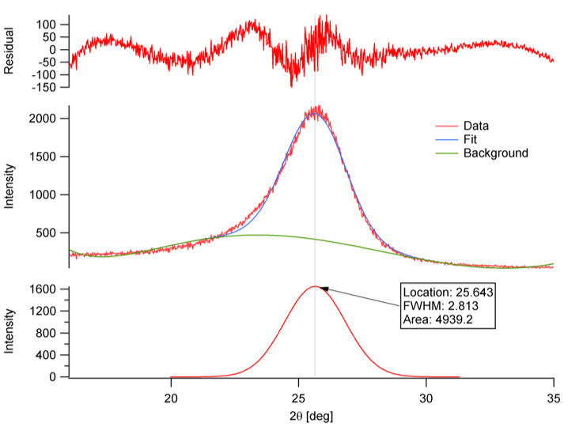

Thermal Characterization and X-ray Scattering/Diffraction
Facility: Polymer Characterization Laboratory
Polymer Characterization Lab: Thermogravimetric Analysis (TGA)
Samples can be analyzed in the temperature range from room temperature up to 1200°C in many different environments. The IR furnace is capable of heating rates of 0.1 to 500°C/min. in linear control, or over 2,000°C/min
Polymer Characterization Lab continued: Differential Scanning Calorimetry (DSC)
Samples can be analyzed in the temperature range from room temperature up to 1200°C in many different environments. The IR furnace is capable of heating rates of 0.1 to 500°C/min. in linear control, or over 2,000°C/min
Polymer Characterization Lab continued: Dynamic Mechanical Analysis (DMA)
Q800 DMA Temperature range:-150 to 600 C Maximum Force: 18 N Strain Resolution: 1 nm Force Resolution: 0.0001 N Storage Modulus: 10^3 to 3^12 Pa Frequency: 0.01 to 200 Hz
Storage Modulus for Glass Fiber Reinforced Composite (UD epoxy)
Polymer Characterization Lab continued: X-ray Scattering
Xenocs Xeuss 3.0 SAXS instrument:
- determination of size, distribution, shape, and order of nanoparticles and macromolecules
- 2 radiation sources, Cu and Mo
- q-ranges; WAXS, SAXS, MSAXS, and USAXS
X-ray Diffraction and Scattering
Wide Angle X-ray Diffraction(WAXD) of carbon fibers
Small Angle X-ray Scattering (SAXS) of carbon fiber
XRD (002) peak
TT24K
TCF (Fiber A)
